Four homes across four regions · what to look forward to at each one
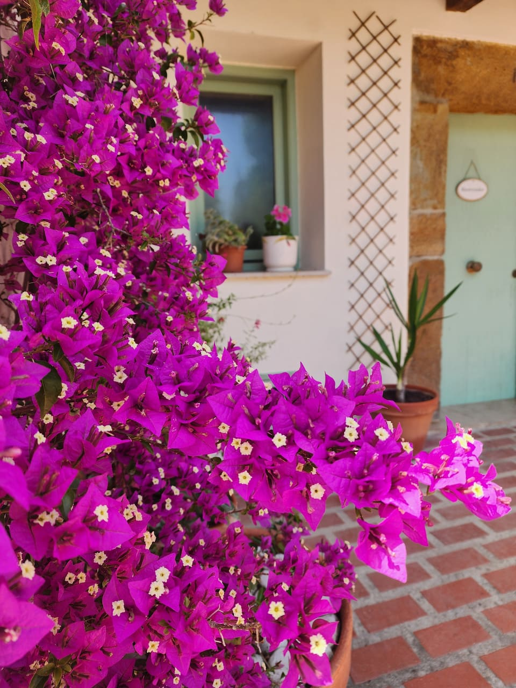
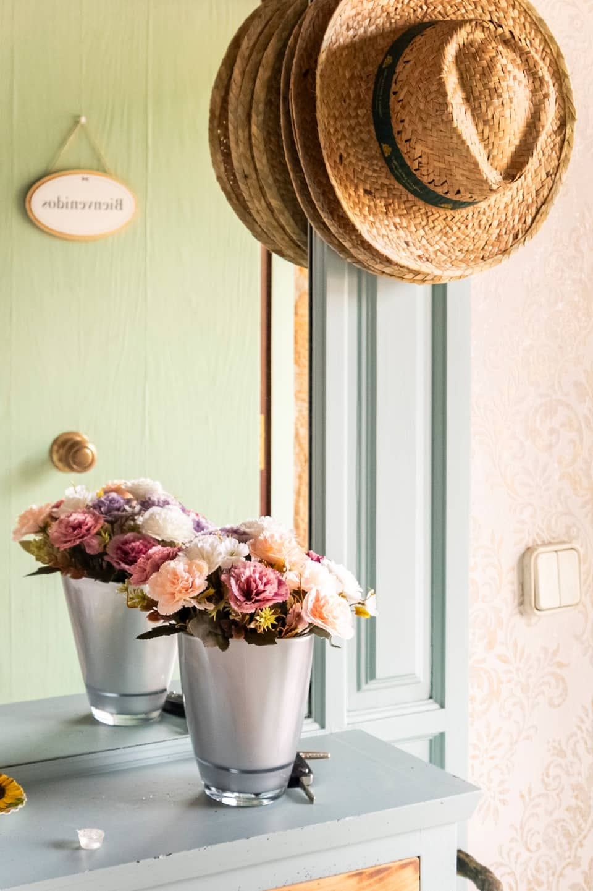
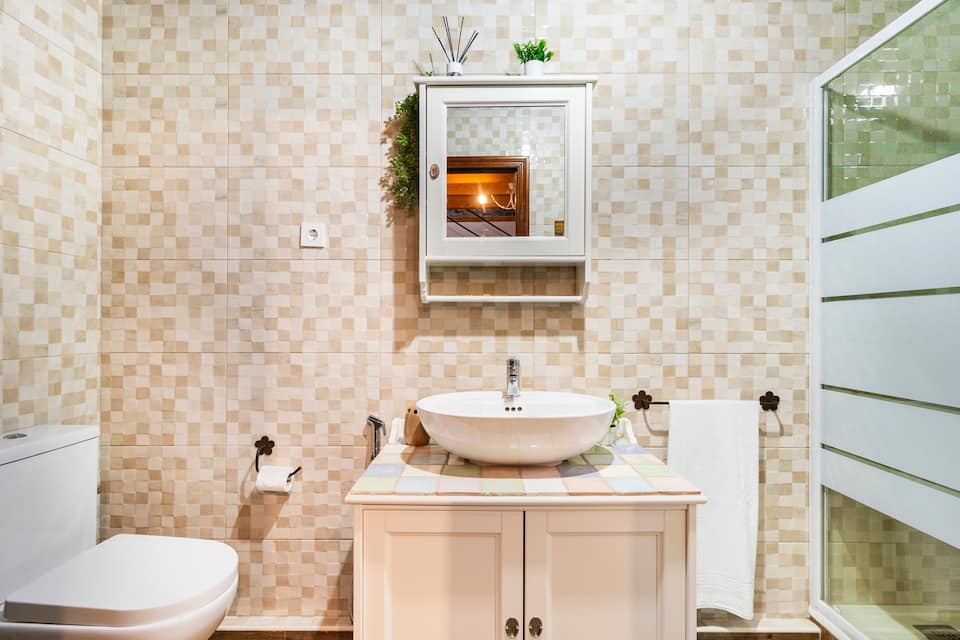
Four nights in one place with all eight of you under one roof — the longest unpacked stretch of the trip. And the headline needs no planning at all: on Wednesday evening, totality happens over the garden. No driving, no crowds, no parking lot — sun-lounger astronomy at ~20:27, then dinner.
You're in pasiego country: village bakeries sell sobaos and quesada pasiega still warm. Somo and Langre beaches are ~25 minutes north; Santillana del Mar's cobbles and the Altamira cave museum make the classic day out; Cabárceno's drive-through wildlife park is the ace up the sleeve for Ben and Eliza. Grab tins of anchoas de Santoña while you're this close.
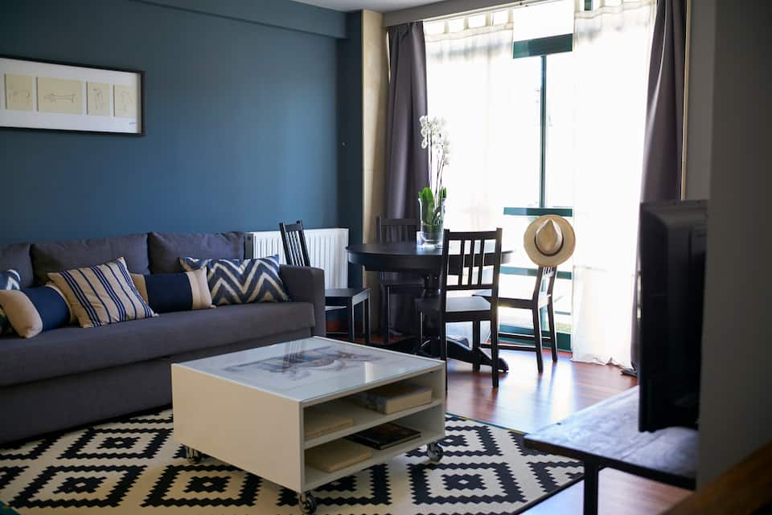
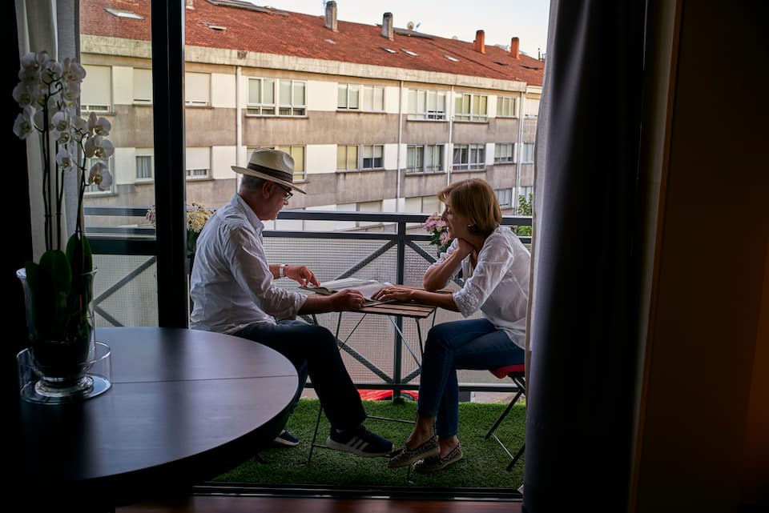
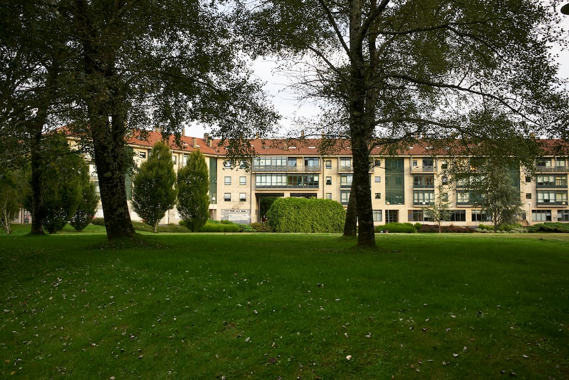
The luxury here is the parking spot: after the longest drive of the trip, the car goes in the garage and stays there — Santiago is a walking city and you're "a un paso de la catedral." Marina meets you at 4 PM, so arrival is a handshake, not a lockbox hunt.
Evening on Praza do Obradoiro watching pilgrims walk the last hundred meters of their 800 km is the free show that never gets old. Then: pulpo a la feira with Albariño, tarta de Santiago from Casa Mora in the old town, and if a pilgrim mass lines up, the botafumeiro swinging overhead in the cathedral. The Alameda park playground has the postcard view of the spires.
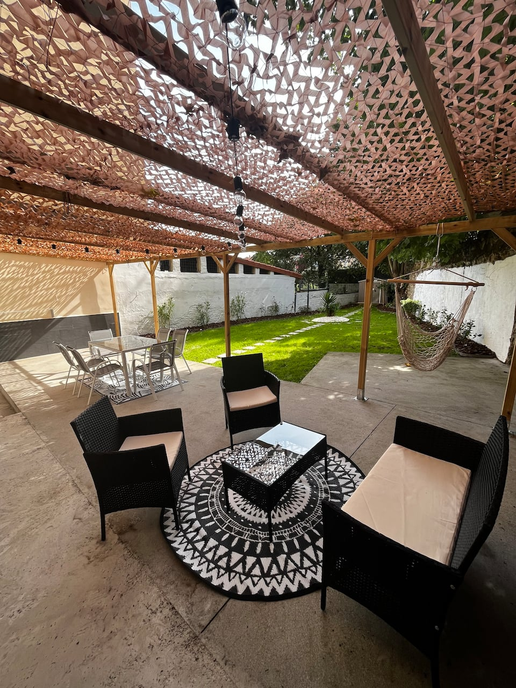
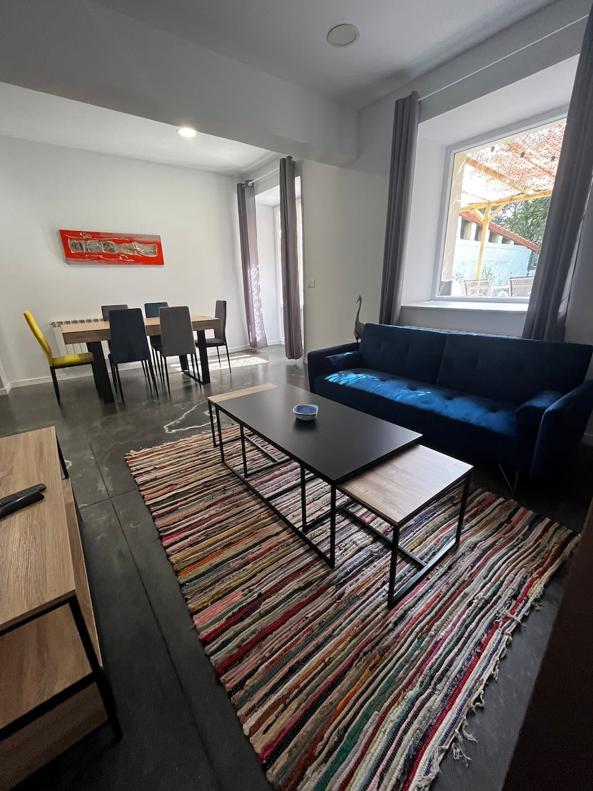
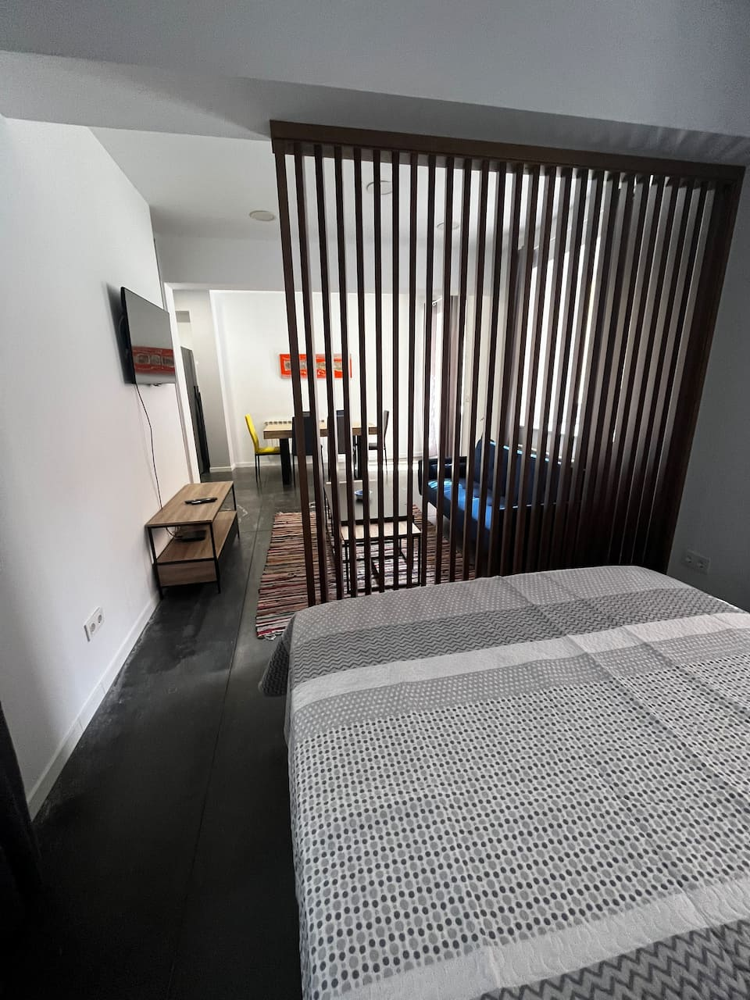
The photos don't lie: a private walled garden with a pergola and a hammock, in the middle of the old town — nearly unheard of in a Spanish city center. Lu and Dondi rejoin you here, so the first night back together can be cider on the lawn while the kids burn off the car ride on actual grass.
Calle Gascona — Oviedo's "cider boulevard" — is a couple of blocks away: watch the escanciado pour from a meter up, drink the shot fast. Order one cachopo for every two people (trust this). San Francisco park's famously bold squirrels are a five-minute walk for the kids, and Gijón's Playa de San Lorenzo is 30 minutes if a beach morning calls.
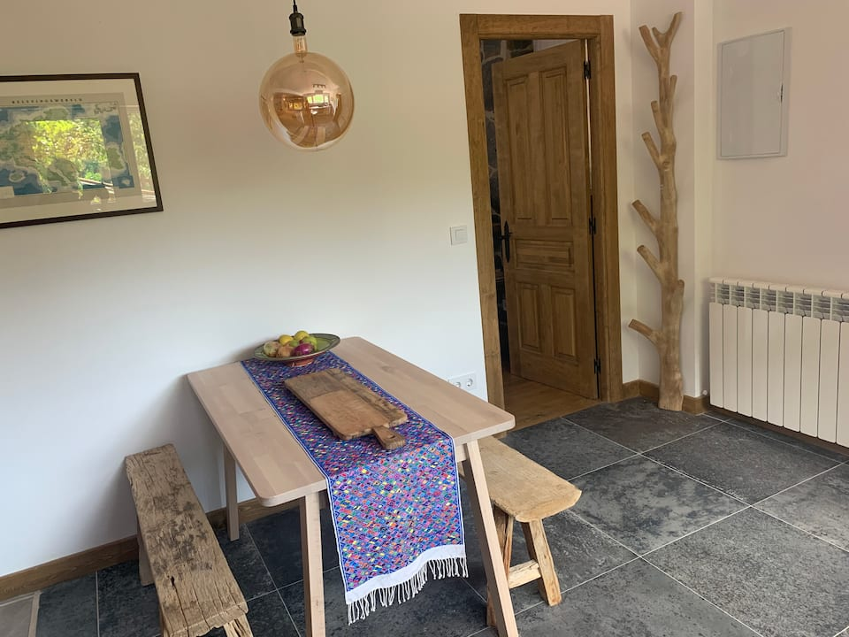
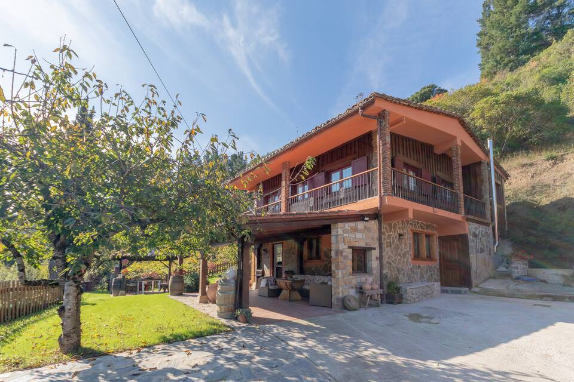
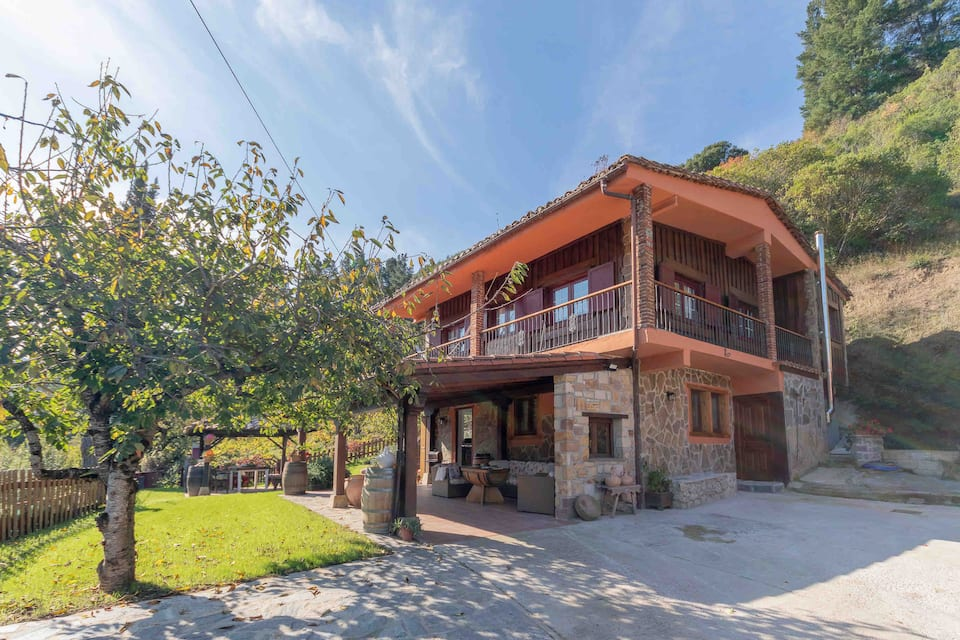
A farm stay at the foot of the Picos — rough-hewn benches, slate floors, and the whole group in two adjacent apartments, so shared breakfasts and separate bedtimes both work. After ten days of moving, four nights in mountain air with nowhere you have to be.
The Fuente Dé cable car hoists you 750 m up a rock wall in four minutes to your two AllTrails routes (Lagos de Lloroza; Tresviso). In town: the Torre del Infantado, the medieval bridges, and cocido lebaniego — the chickpea mountain stew that finally makes sense after a hike. Cangas de Onís and its Roman bridge make the classic drive out; a sip of orujo, the local firewater, is the traditional end to dinner.
Bike idea from the notes: Santa María — either Piasca (Romanesque, ~6 km south) or Lebeña (Mozarabic, ~9 km northeast, €2, closed Mondays). Both are lovely rides; pick by which valley you want.